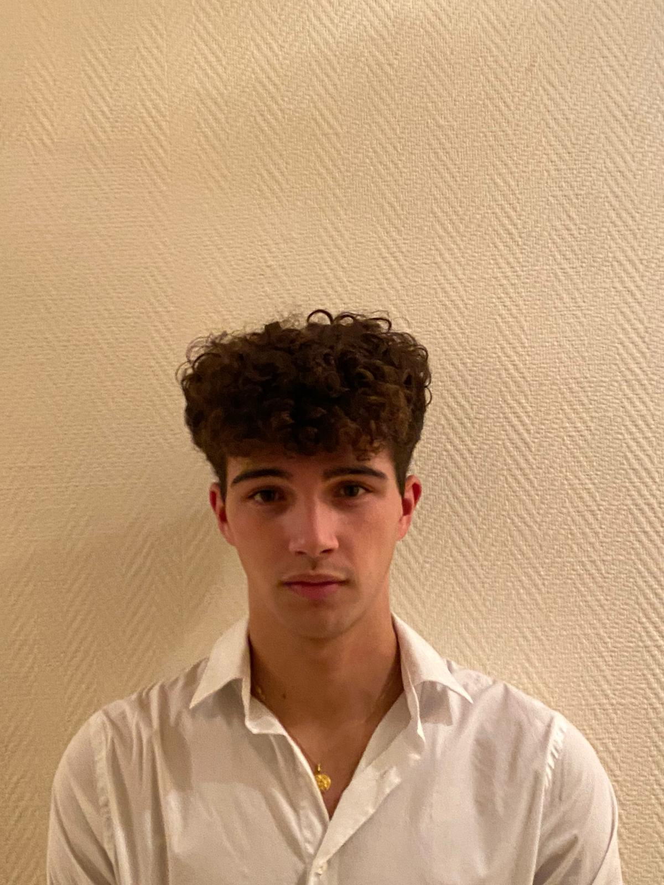

Hello, I'm Valentin !
Welcome to my profile ! I enjoy entrepreneurship, watches, and football !
My LinkedinWho I am
My name is Valentin Chevaux and I am 18 years old. I am passionate about sports, especially football and about Entrepreneurship 💼 and watches. I'm a student at IESEG Lille but I come from Seine-et-Marne.
Entrepreneurship 💼
I am passionate about entrepreneurship and enjoy creating new ventures and projects. Building a business requires dedication, creativity, and hard work, but the rewards can be tremendous. I enjoy taking on challenges and finding innovative solutions to problems. Entrepreneurship has taught me to think outside the box and to persevere in the face of adversity.
Horology ⌚️
I am interested in horology and enjoy learning about the art and science of watchmaking. The intricate designs and mechanics of watches fascinate me, and I appreciate the craftsmanship and attention to detail that goes into creating each timepiece. I also enjoy collecting watches and appreciate the unique characteristics and history behind each one. Horology has taught me to value quality and precision, and to appreciate the beauty and complexity of mechanical engineering.
Football ⚽️
Football is a sport that has been a part of my life since I was young. It's a game that requires teamwork, strategy, and skill, and it's a great way to stay active and competitive. I enjoy both playing and watching football, and the excitement of a close game is unbeatable. Football has also taught me the value of sportsmanship and respect for my opponents.